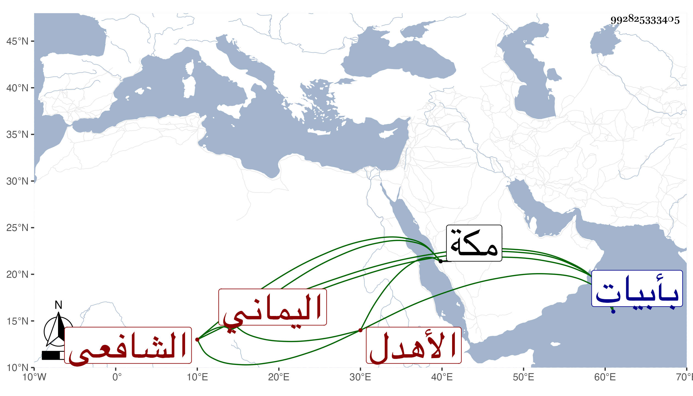

0902Sakhawi.DawLamic.ITO20230111-ara1.EIS1600.992825333405
Biography ID: 992825333405
556
حسين بن صديق بن حسين بن عبد الرحمن بن محمد بن علي بن أبي بكر ابن الشيخ الكبير على الأهدل البدر أبو محمد حفيد شيخنا البدر الحسيني اليماني الشافعي الآتي أبوه وجده ، ويعرف كأبيه بابن الأهدل ولد في ربيع الثاني سنة خمسين وثمانمائة بأبيات حسين ونشأ بنواحيها واشتغل بها في الفقه على الفقيهين أبي بكر بن قيس وأبي القسم بن عمر بن مطير وغيرهما ، وفي النحو على أولهما وغيره ، ثم انتقل إلى بلاد المراوعة واشتغل بها على الفقيه على الأحمر في النحو ، ثم إلى بيت ابن عجيل فاشتغل على الفقيه إبراهيم بن أبي القسم جعمان وغيره ، ثم دخل زبيد في سنة ثمان وستين فاشتغل بها في الفقه على عمر الفتي وغيره وفي الأدب على الدين الشرجي ثم حج سنة اثنتين وسبعين وجاور التي تليها وحضر مجالس البرهاني والمحيوي قاضييها وأذن له البرهان وغيره وزار النبي صلى الله عليه وسلم وسمع بها من أبي الفرج المراغي ثم عاد لبلاده وأخذ عن يحيى العامري وبحث عليه المنهاج ثم عاد ولازمني في المجاورة الثالثة بمكة فقرأ على أشياء من تصانيفي بعد أن كتبها بخطه وكذا سمع من لفظي وعلي أشياء ، وهو فاضل بارع في فنون ناظم مفيد حسن القراءة والضبط لطيف العشرة متودد قانع عفيف أقرأ الطلبة بناحيته ، وقرأ الحديث على العامة سيما القول البديع ونحوه ، مدحني بقصيدة أنشدنيها بحضرة الجماعة ، وكتبت له إجازة حافلة ورأيت النجم بن فهد كتب عنه من نظمه كثيرا وترجمه ، وبلغني أنه في هذه السنين تحول عن طريقته فسلك التسليك والشياخة الصوفية ، وكأنه لمناسبة الوقت ، ووردت على كتبه في سنة تسع وتسعين وما قبلها بالتشوق الزائد والمدح العائد .
